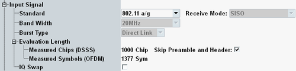

The WLAN "Input Signal" parameters define basic WLAN signal properties. The values in this section must be set in accordance with the measured signal (see "How to Measure a WLAN Signal").

These parameters are also listed at the top of the configuration tree.
See "Basic Input Signal Settings"
Displays the burst type, depending on the selected standard, see "Physical Layer".
A selection can only be made for standard IEEE 802.11n: Choose "Green Field" for signals with greenfield header format and "Mixed" for all other signals.
Remote command:- For DSSS signals, you can configure the number of payload chips to measured. The checkbox selects whether the preamble and header are skipped or measured in addition to the configured number of payload chips.
- For OFDM signals, you can configure the number of payload symbols to be measured. The preamble/header is not measured.
- For DSSS signals, you can select whether the whole burst is measured, or only 1000 chips of the burst.
- For OFDM signals, always the whole burst is measured.
For more details, see "Defining the Scope of the Measurement".
Remote command:Refines the basic burst filter of IEEE standard to limit the evaluation to bursts of a particular modulation type.
If the received burst has a different modulation, the reliability indicates "Wrong Modulation", see "Reliability Indicator".
Remote command:This setting is only displayed for standard 802.11p. It selects the STA transmit power class as defined in annex D.2.2 of standard IEEE 802.11-2012.
The power class determines the transmit spectrum mask to be applied, see also "Transmit Spectrum Mask OFDM, by Regulation".
"Class A" | The "Class A" transmit spectrum mask is used for limit checks. |
"Class B" | The "Class B" transmit spectrum mask is used for limit checks. |
"Class C/D" | There is no transmit spectrum limit check. |
"User Defined" | The "User Def." transmit spectrum mask is used for limit checks. |
This setting is only displayed for 802.11n composite MIMO measurements. It specifies the reference signal, see "Composite MIMO Measurements".
"No Data" | Unknown signal |
"Internal Data" | The R&S CMW expects to (continuously) receive the same burst that was "recorded" during the preceding training mode session (still available in internal memory). |
"File Data" | The R&S CMW expects to (continuously) receive the burst that was "recorded" to the selected file. |
With active I/Q swap, the I values are mapped to the Q channel and vice versa. As a result, the points in the I/Q constellation diagrams are reflected at the first bisector (Q = I). In spectral representation, the spectrum is reflected at the RF carrier frequency.
Remote command: